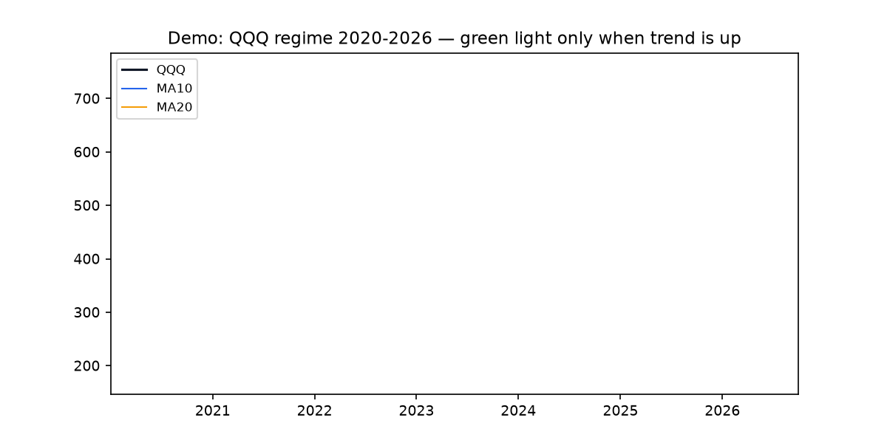
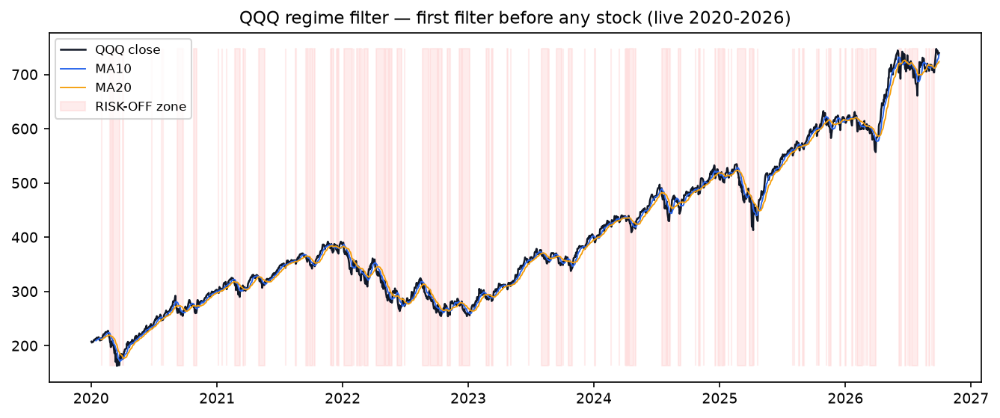
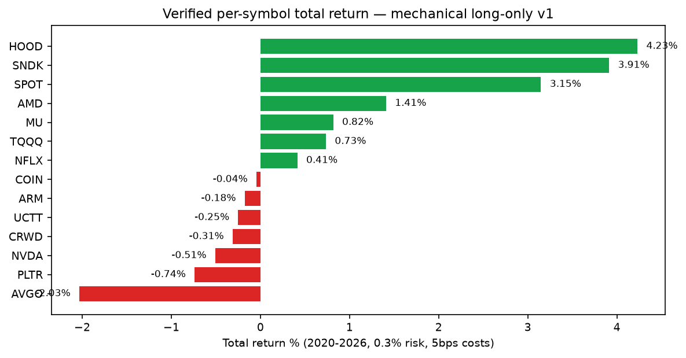
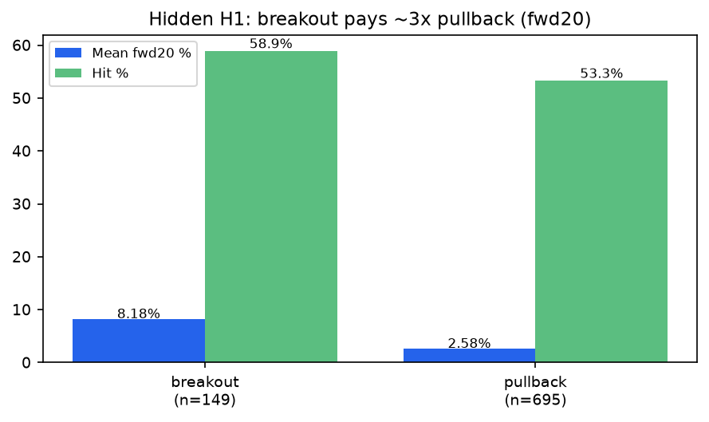
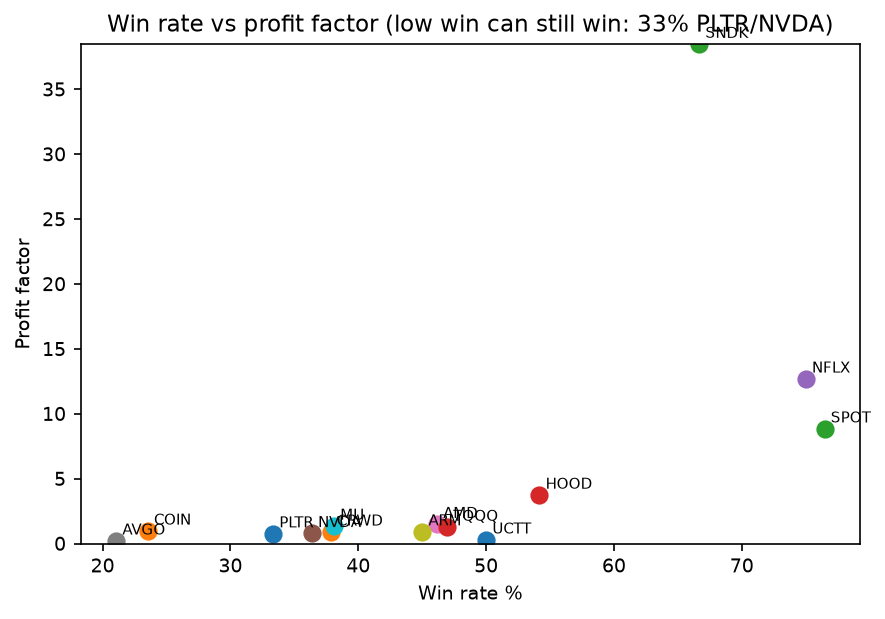
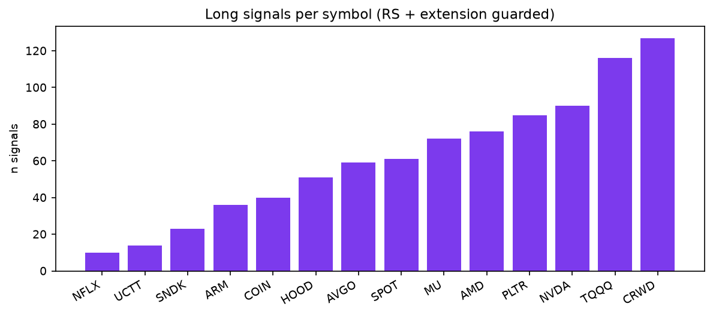

CEO summary in 30 seconds: This repo turns a championship podium trading method into plain-English rules, tests it on 6+ years of real public market data, and shows exactly when it works, when it rests, and how risk is kept tiny. Beginners get pictures and stories. Professionals get code, numbers, and Docker to rerun everything in 3 commands. Reading this page makes you dangerous enough to avoid the 5 mistakes that kill most traders.
If you only remember one line: preserve first → small steady wins → big swings only with cushion, trend, and strong stocks.
GIF autoplays on GitHub. MP4 has controls here. Both generated from live QQQ data — not drawings.

How to replay: docker compose run --rm lab python scripts/generate_assets.py → refreshes GIF+MP4 from live cache.





docker compose build → docker compose run --rm lab python scripts/fetch_live.py → docker compose run --rm lab python scripts/run_all.py --period 2020-01-01:2026-10-01 --run-all
Local without Docker: PYTHONPATH=src python3 scripts/run_all.py --period 2020-01-01:2026-10-01 --run-all · Tests: PYTHONPATH=src python3 -m pytest tests/ -v
| Feature | What you get | Who loves it |
|---|---|---|
| Plain-English rules | Stage-2, wedge-pop, launch-pad, breakout/pullback, 4-ATR veto, monthly floor | Beginners, teachers |
| Live verifier | 14 leaders + QQQ/SPY 2020–2026, costs 5bps, no look-ahead | Quants, skeptics |
| Regime gate | RISK-ON 42.36% / OFF 28.97% / CHOPPY 27.55% | Risk managers |
| Dynamic risk | 0.2/0.3/0.5/1.0% + 25% cap + 3/day + 1%/day | Prop traders |
| Ablations | no-regime / no-RS / no-extension side-by-side | Researchers |
| Hidden patterns H1–H5 | Breakout 3×, launch lift, extension paradox, concentration 106% | PhD students |
| Walk-forward | 2020–22 train vs 2023–26 frozen test | Reviewers |
| Visuals + video | 5 PNGs + GIF + MP4, all regenerated | Everyone |
| Docker + Makefile | One-command repro, notebook profile :8888 | OSS users |
| Symbol | Trades | Win | PF | Sharpe | MDD | Total |
|---|---|---|---|---|---|---|
| HOOD | 24 | 54.17% | 3.74 | 0.76 | -0.70% | +4.23% |
| SNDK | 6 | 66.67% | 38.48 | 0.88 | -0.05% | +3.91% |
| SPOT | 17 | 76.47% | 8.85 | 0.86 | -0.31% | +3.15% |
| AMD | 26 | 46.15% | 1.49 | 0.26 | -1.00% | +1.41% |
| MU | 21 | 38.10% | 1.36 | 0.14 | -2.00% | +0.82% |
| TQQQ | 49 | 46.94% | 1.27 | 0.16 | -1.62% | +0.73% |
| NFLX | 4 | 75.00% | 12.69 | 0.46 | -0.04% | +0.41% |
| PLTR | 27 | 33.33% | 0.77 | -0.17 | -1.43% | -0.74% |
| NVDA | 33 | 36.36% | 0.79 | -0.18 | -0.62% | -0.51% |
| AVGO | 19 | 21.05% | 0.22 | -0.84 | -2.03% | -2.03% |
Full 14-name table in README + results/summary.md. Sizing NVDA: fixed-1% -1.19%/mdd-2.28% vs dynamic -0.51%/-0.62% vs tiny -0.14%/-0.23%.
Do I need money to use this? No. Paper-trade with cache. Is this financial advice? No — education only. Why are returns small? 0.3% risk is a seatbelt; champions add concentration + margin + shorts (explained as next steps). What if market crashes? Regime turns red, system rests — that is the feature. Can a kid run it? Yes: 3 Docker commands.